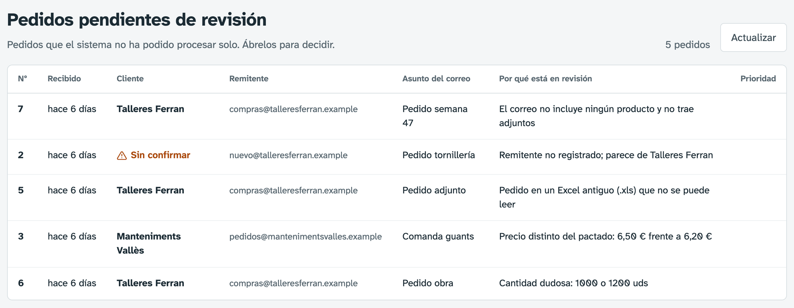
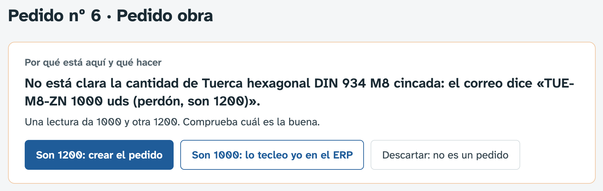
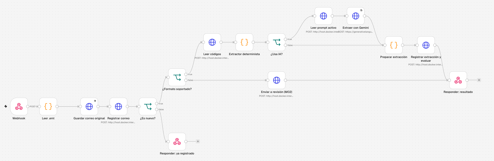

El problema
Orvalle vende tornillería, guantes y herramienta a talleres y pequeñas fábricas. Sus clientes piden por correo, cada uno a su manera: texto libre, un Excel propio o un PDF. Cuatro personas leen cada correo, buscan qué producto es, comprueban el precio pactado y lo teclean en el ERP. La empresa quiere crecer sin contratar, y con este proceso no llega.
| Pedidos por correo al mes | 1.800 |
|---|---|
| Tiempo para teclear cada uno | 6 min |
| Horas al mes tecleando pedidos | 180 h |
| Parte de las 560 horas efectivas del equipo | 32 % |
| Crecimiento previsto sin contratar | 20 % |
La decisión clave
Lo fácil sería dárselo todo a una IA. Aquí el trabajo se reparte en tres, y cada parte tiene claro lo que queda fuera.
| Quién | Qué hace | Qué queda fuera |
|---|---|---|
| La IA lee | Saca de un correo desordenado una lista: qué producto, cuánto y a qué precio. | identificar al cliente, aceptar un precio o decidir si el pedido sale. |
| Las reglas deciden | Comprueban si conocemos a quien escribe, si el producto existe y si el precio es el pactado. | fiarse de lo segura que diga estar la IA. |
| Una persona resuelve lo dudoso | Ve el motivo en una frase, el correo original y los botones que tocan. | saltarse un precio que tiene que aprobar el comercial. |
Además, un segundo lector, más simple y sin IA, lee lo que puede. Si los dos no coinciden, no se crea el pedido.
Cómo está montado
n8n orquesta, Gemini lee y las reglas viven en la base de datos (Supabase). El ERP es simulado.
Cómo se ve




Resultados
20 correos de desarrollo, una pasada por configuración: solo reglas, solo IA y las dos juntas (híbrido).
| Configuración | OK | ACEPTABLE | FALLO | Automáticos erróneos o indebidos |
|---|---|---|---|---|
| Solo reglas | 7 | 5 | 8 | 8 de 11 |
| Solo IA | 18 | 1 | 1 | 0 de 11 |
| Híbrido | 16 | 3 | 1 | 0 de 9 |
ACEPTABLE es una salida segura que no era la esperada: el caso llega a una persona. La última columna son pedidos creados sin intervención con algún error, o que tenían que ir a revisión.
- Las reglas solas no valen. Dejan líneas fuera y crean el pedido sin avisar.
- En estos casos, solo IA sale algo mejor que el híbrido. El segundo lector no evitó ningún pedido equivocado y costó dos revisiones de más. Es el precio de un seguro, y con tan pocos casos no se sabe si compensa.
- El caso que falló con IA es un cliente que corrige el código de un producto a mitad de línea. Con el híbrido no se creó ningún pedido equivocado: llegó a una persona.
Los límites
- Son 20 correos de desarrollo. 7 sirvieron para construir el sistema y 13 se escribieron conociéndolo. No hay un conjunto de prueba guardado aparte. Con 0 errores en 9 pedidos automáticos, el error real podría llegar a 1 de cada 3.
- Los 13 correos nuevos y sus etiquetas los escribió una IA (Claude). Una segunda instancia de Claude, que no las escribió, revisó las 13 etiquetas, sin cambios. Todavía no hay revisión humana.
- Faltan piezas. Distinguir un pedido de una consulta, detectar duplicados, comprobar cajas y unidades, leer PDF y enviar respuestas al cliente. Hoy, una consulta con código y cantidad podría acabar en pedido.
- El ahorro no está demostrado. Depende de cuánto se tarde en revisar cada pedido dudoso, y eso solo lo dice un piloto con el equipo.
Qué viene después
- Una prueba seria: 80 correos, etiquetados por una persona, con 60 guardados aparte y ejecutados una sola vez.
- Las reglas que faltan: duplicados, unidades y embalajes, e importe máximo, entre otras.
- La migración de datos maestros: tarifas pactadas y equivalencias que hoy viven fuera del ERP.